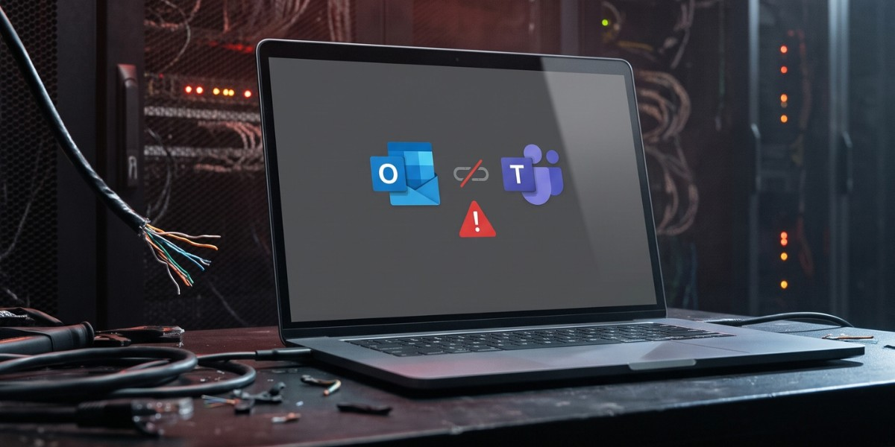

Geekotidien · Édition du 18 novembre 2026
Panne Microsoft record
Une panne de plus de 24 heures touche Outlook et Teams

Une panne de plus de 24 heures a touché plusieurs services de Microsoft, dont Outlook et Teams. Downdetector a reçu environ 7,4 millions de signalements d'utilisateurs, contre 2,8 millions pour la panne de YouTube quelques mois plus tôt.
Mario De Cicco, de Morningstar DBRS, estime que les pertes assurées « pourraient atteindre » 500 millions de dollars. Ce montant est une estimation.
Microsoft attribue la panne à des problèmes d'infrastructure réseau, en écartant une cyberattaque et l'IA.
Les signalements venant des utilisateurs, ils sont difficiles à vérifier. L'article note aussi qu'AWS n'avait finalement pas subi de panne malgré certaines annonces.
Le + : Le montant de 500 millions de dollars est une estimation, et les 7,4 millions de signalements proviennent d'utilisateurs.